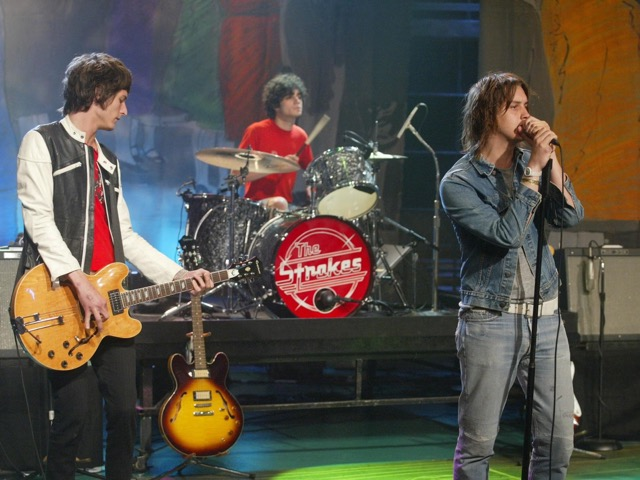
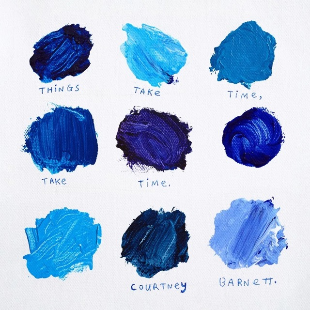
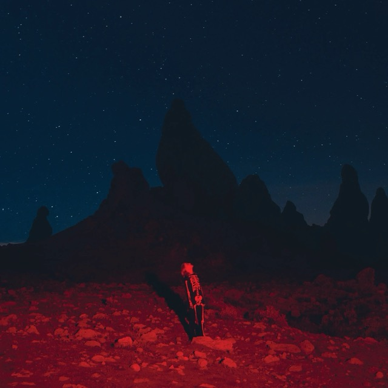

History of Indie Rock
The Digital Age and the Indie Rock Renaissance
The rise of the internet and digital technology in the 2000s opened new doors for indie musicians. With platforms like Bandcamp, SoundCloud, and Spotify, artists could now self-release their music directly to fans without relying on traditional record labels. This democratization of music production and distribution allowed a new wave of indie artists to emerge, often drawing on a variety of genres, from folk and electronic to post-punk and experimental rock. In the mid-2000s, indie rock experienced a "renaissance" with bands like Arcade Fire, The Strokes, Vampire Weekend, and The White Stripes leading the charge. These bands brought indie rock into the mainstream, but they did so while keeping their roots in DIY culture. The "indie" label became synonymous with both authenticity and innovation, with bands pushing the boundaries of sound, image, and performance. By the 2010s and 2020s, indie rock had evolved into a diverse and global genre. Artists like Tame Impala, Courtney Barnett, Mac DeMarco, and Phoebe Bridgers have expanded indie rock’s influence, with crossovers into pop, electronic, and experimental music. The genre is no longer defined by a specific sound or aesthetic, but rather by a commitment to independence, artistic expression, and breaking free from industry norms.
Indie Rock Today
Today, indie rock is as vibrant and diverse as ever. With its combination of digital tools, streaming platforms, and grassroots fan communities, the genre is thriving. Whether it's the dreamy, atmospheric sounds of Beach House, the emotionally charged folk-rock of Sufjan Stevens, or the genre-blurring experiments of Arctic Monkeys, indie rock continues to evolve, embracing a wide array of influences while staying true to its DIY spirit. Indie rock’s global influence is clear—artists from all corners of the world are redefining what it means to be an independent musician. From the lo-fi sounds of Japanese Breakfast to the eclectic alt-pop of Clairo, the indie scene is a truly international movement, constantly evolving and expanding the boundaries of what indie rock can be.
Conclusion
At its core, indie rock is about independence. It’s a rejection of the corporate machinery of the music industry, a celebration of the artist’s voice, and a space for raw, unfiltered creativity. While it has gone through many phases and transformations over the years, one thing has remained constant: indie rock is a genre that thrives on passion, freedom, and the pursuit of something real. As we look to the future, one thing is clear—indie rock’s journey is far from over. It’s an ever-evolving story, shaped by new artists, new sounds, and a community that continues to push the boundaries of what music can be. Call to Action: Want to explore the history of indie rock through music? Check out our playlist of classic albums and game-changing tracks that define the genre.